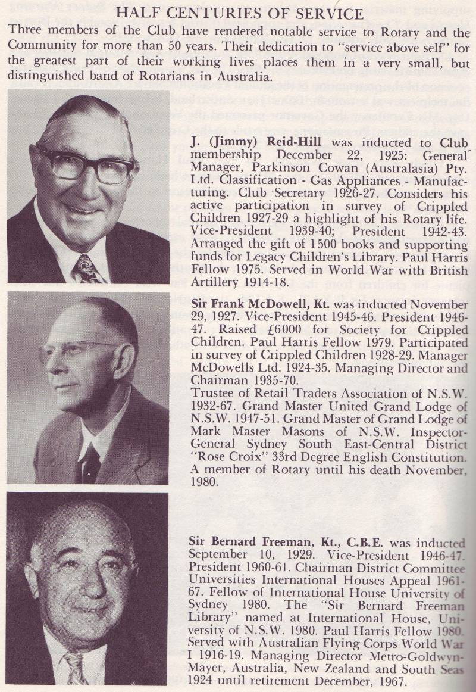

|
|
| SEARCH |
Rotary Club of Sydney |
|
Sydney - 1926 District 9750 Host Club Convention of 1971 and 2014 |
|
It
was in 1921 that two Special Commissioners arrived in Australia with
credentials from the Board of the International Association of Rotary
Clubs in Chicago, to establish Rotary in Australia and New Zealand. They
were James W. Davidson, FRGS, Past President of the Rotary Club of
Calgary, and Lieutenant Colonel J. Layton Ralston, CMG. DSO. KC,
President of the Rotary Club of Halifax. The Canadian contribution, with
expertise and part cost, to the establishment of Rotary in Australasia
was very significant. At that time there were only 800 clubs in the
United States, Canada and the British Isles. Graphic: "The Rotary Club of Sydney 1921-81" by PDG Alex Mitchell When the Rotary Club of Sydney held its inaugural meeting on 7 May 1921, with 35 members, they elected Sir Henry Braddon as the President. He was the Managing Director of Dalgety & Co., a major wool broking company and had gained some knowledge of Rotary when he was in the office of the Trade Commission of the Commonwealth of Australia in New York in 1919. Sir Henry had the special distinction of having been “capped” by both the Australian and New Zealand Rugby Unions. The first Vice President elected was Dr. Arthur E. Mills, Dean of the Faculty of Medicine at Sydney University. The members were a cross-section of professions and business activities, and the criterion for eligibility of members was broadly, one member from each vocational classification. In 1935 Paul Harris planted a Friendship Tree at Sydney. Observing the many projects undertaken by the Club in later years – such as the foundation of the NSW Crippled Children’s Society (now the Northcott Society) and the Police Rotary Boys’ Club (now The Police and Community Youth Clubs) – it was not surprising that the very first service activity was to organise an outing to the seaside for 120 children and their nurse from the Royal Alexandra Hospital for Children in November 1921. There followed similar activities until in 1924 the first major project, Boys’ Week, was undertaken. This culminated in considerable support for the Boys’ Brigade and a new building at Pyrmont. By 1926 the Rotary Club of Sydney was establishing Rotary Clubs widely throughout New South Wales and Queensland. There has been considerable growth in the Club and for most of the last 50 years the membership has been over 300. It remains the largest Club in Australia. Its territory, which initially comprised an area within an 80 mile radius of the city centre, is now concentrated in the central business district of the city and is shared with three new city clubs – Sydney Cove and Sydney CBD, both chartered by the Rotary Club of Sydney, and Darling Harbour, co-chartered with the Rotary Club of Sydney Cove. The Club hosted the 62nd Rotary International Convention in May 1971, some 17,220 delegates attended this first Convention to be held in Australia. Major projects initiated over the years by the Rotary Club of Sydney include the Free Library Movement, which led to a significant expansion of free lending libraries throughout New South Wales; the Australian Administrative Staff College at Mount Eliza (now the Mt Eliza Business School); the Old Peoples’ Welfare Council (now the NSW Council for the Ageing); and the chartering of the Probus Club of Sydney. In recent years the Club has contributed large sums to the support of The Sydney Children’s Hospital ICU for babies, to the Sir David Martin Foundation Triple Care Farm, for disadvantaged youths who come before the Courts, and to the StreetSmart Project, an outreach centre for young homeless people, in conjunction with the Wesley Central Mission. Contributions by way of personal service and financial support have been made in substantial measure to the Alzheimer’s Association, to the Sydney Eye Hospital, to the Microsearch Foundation of Australia, a pioneering micro-surgery research and training facility, to Habitat for Humanity, a church program to build houses for poor families, to Dr. Barnardo’s Homes and to the Spinesafe Education Program. Two recent major initiatives of the Club were Business in the Community (now Business Enterprise Centres) and the Ranfurly Library Service, which provides reading material for schools and hospitals throughout the South Pacific. A major ongoing project each year is the “Your City Program”, which provides city experience in all its diversity to senior country students. Other ongoing projects include RYLA, RYPEN, GSE and Rotary Youth Exchange. The “Adrian Golding Gift of Life Program”, established in honour of a deceased member, sponsors young children from the Pacific Islands who are facing severe surgical or medical problems untreatable in their own countries to visit Australia for remedial treatment. Over the last two years, the Club has organised a Corporate and Business Leaders’ Dinner at the Art Gallery of NSW to coincide with the Archibald Exhibition. The purpose of this dinner is to introduce Sydney’s business leaders to the Rotary Club of Sydney and to focus on partnerships with the business community to develop worthwhile community projects. Funds raised from these dinners exceeded $188,000, benefiting the Spastic Centre of New South Wales’ Conductive Education Program for children born with cerebral palsy. There are also ongoing “service awards” made each year to recognise leaders and achievers in the community, in their vocation, in education and amongst handicapped people. These awards honour the recipients’ contribution to society, exemplifying Rotary’s motto “Service Above Self”. In the year 2000, the City of Sydney was the venue for the Olympic Games and the Paralympic Games and the Club contributed in various ways to the great success of the occasion – eg. by initiating and developing a Home Hosting Program for athletes and their families; by actively encouraging Rotary Clubs throughout the State to sponsor local children to attend the Paralympics; and by fund-raising to purchase Paralympics tickets for donation to various charitable organisations. Female members were first inducted into the Club in 1990 and for the year 2002-03 the Club has elected its first female President. The President’s Project for 2001-02 was for the provision of funds towards development of the “Lifestart Program” a family-centred program and family support facility for young children with an intellectual disability or developmental delay for which $170,000 was raised. The Club’s History has been written by PDG Alex Mitchell, CBE in two volumes. The first, 1921-1981, is out of print but the second volume, 1982-1991, is available from the Club’s office. Both volumes are available in NSW city libraries and the National Library, Canberra. The 1971 convention saw RI's approval of RYLA which as born in Australia Photos from Calum Thomson, this entire section was prepared by PDG John Louttit. |
RGHF members, who have been invited to this page, may register RGHF members, who have been invited to this page, may register If a DGE/N/D joins prior to their year, they will have more exposure to Rotary's Global History by their service year. This will be beneficial to all concerned. *Based on paid members, subscribers, Facebook friends, Twitter followers, mobile app users, History Library users, web pages, and articles about Rotary's Global History RGHF Home | Disclaimer | Privacy | Usage Agreement | RGHF on Facebook | Subscribe | Join RGHF | |